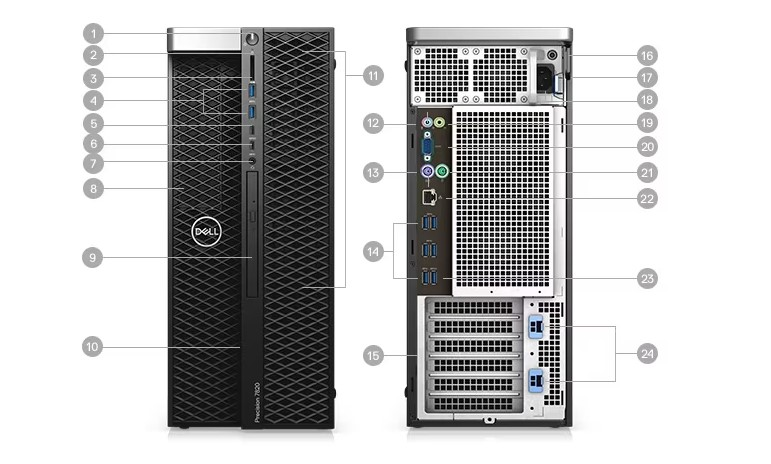
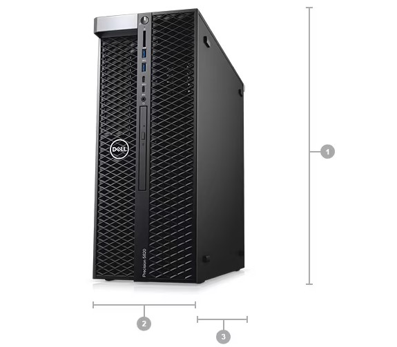

Especificaciones Técnicas:
Procesador:
Marca del Procesador: Intel
Modelo: Core i7
Versión: 10700
Velocidad: Base 2.90 GHz l Con Turbo 4.80 GHz
Memoria RAM:
Capacidad: 8GB
Tipo: DDR4
Bus: 2933MHz
Memorias instaladas: 1
Ranuras para memoria: 2
Disco Duro Magnético:
Capacidad: No incluye / No aplica
Unidad de Estado Solido:
Capacidad: 512GB
Tipo de Conexión: PCIe NVMe M.2
Tarjeta de Video:
Marca: Intel
Modelo: UHD 630
Sistema Operativo:
Tipo: Windows 11
Versión: Profesional
BITS: 64
Q8,325.00
 
Sistema operativo
Disponible con Windows 11, Windows 10 o Ubuntu.
Puertos y ranuras
1. Botón de encendido/luz de encendido | 2. Luz de actividad de la unidad | 3. Ranura para tarjetas SD | 4. Puertos USB 3.1 de 1.ª generación | 5. Puerto USB 3.1 Type-C
de 1.ª generación con PowerShare | 6. Puerto USB 3.1 Type-C de 1.ª generación | 7. Puerto para auriculares | 8. Bahía de 5,25" (opcional) | 9. Unidad óptica | 10. Pestillo
de liberación de acceso de la unidad | 11. Soportes de unidades | 12. Puerto para micrófono/entrada de audio | 13. Puerto del mouse PS/2 | 14. Puertos USB 3.1 de
1.ª generación | 15. Ranura para tarjetas gráficas discretas (opcional) | 16. Anillo del candado | 17. Ranura para cable de seguridad | 18. Conector del cable de
alimentación | 19. Puerto de salida | 20. Puerto serial | 21. Puerto de teclado PS/2 | 22. Puerto de red | 23. Puerto USB 3.1 de 1.ª generación (compatible con encendido
inteligente) | 24. Ranuras para tarjetas de expansión. Q20,830.70